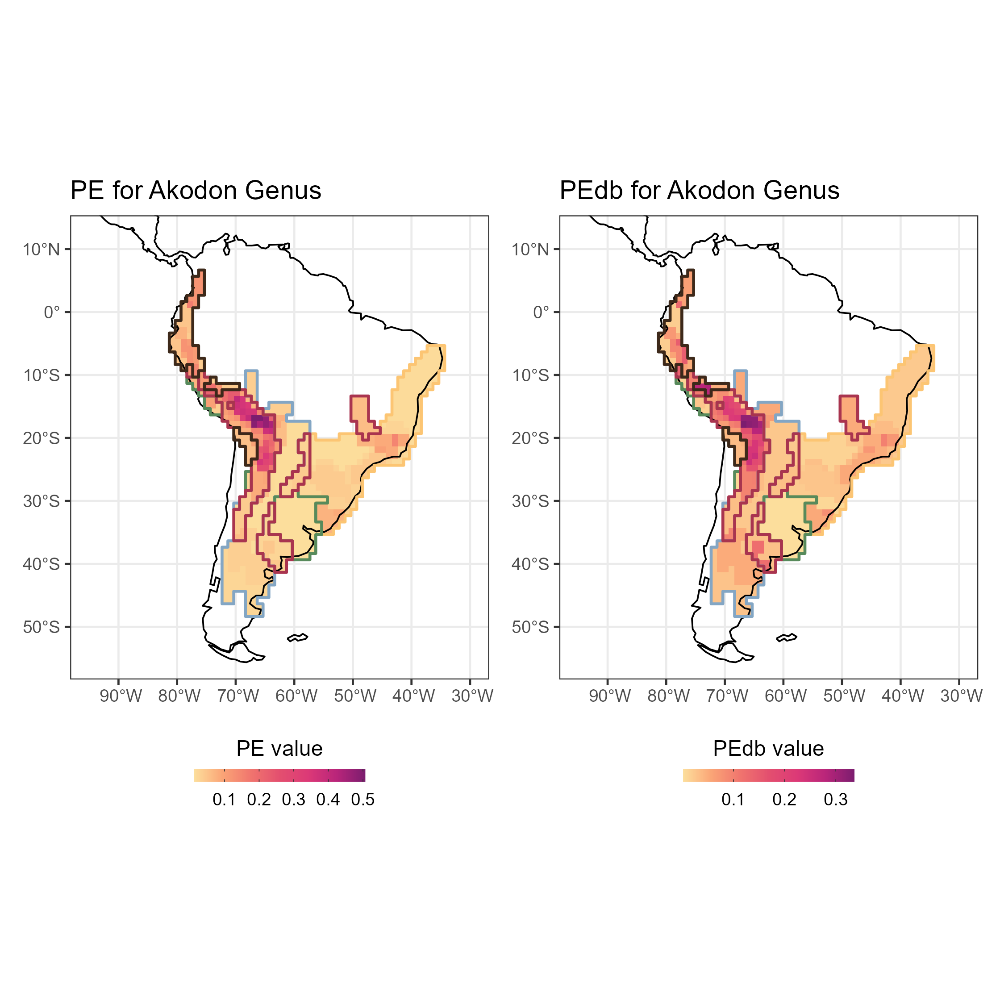

Introduction to Herodotools
2022-05-27
Intro_Herodotools_vignette.RmdIn this article we will show the main functions of Herodotools. To do so we will evaluate the effects of deep past processes, represented by diversification and historical dispersal, on the structure and phenotype of assemblages of species from the genus Akodon.
For this aim we will perform the following steps:
- Process raw occurrence data and phylogenetic information
-
Classify Akodon assemblages in meaningful regions using
evoregionfunction - Calculate macroevolutionary model-based metrics of diversification using an ancestral state reconstruction model
- Calculate model-based community phylogenetic metrics
Reading data and libraries
First, let’s read some libraries we will use to explore the data and produce the figures
library(ape)
library(dplyr)
library(tidyr)
library(raster)
library(terra)
library(ggplot2)
library(stringr)
library(here)
library(sf)
library(rnaturalearth)
library(rcartocolor)If you do not have Herodotools installed use the following code to install the package from github repository:
devtools::install_github("GabrielNakamura/Herodotools", ref = "main")To read the files corresponding to the distribution of species, phylogenetic relationship and trait values (represented by body size) type:
devtools::load_all()
akodon.sites <- read.table(system.file("extdata", "Table_Akodon_coords_pa.txt", package = "Herodotools"),
header = TRUE)
akodon.newick <- ape::read.tree(system.file("extdata", "akodon.new", package = "Herodotools"))Data processing
Here we will perform a few data processing in order to get spatial and occurrence information
site.xy <- akodon.sites %>%
dplyr::select(LONG, LAT)
akodon.pa <- akodon.sites %>%
dplyr::select(-LONG, -LAT)Checking if species names between occurrence matrix and phylogenetic tree are matching
Exploring spatial patterns
Here we can observe the richness pattern for Akodon genus
coastline <- ne_coastline(returnclass = "sf")
map.limits <- list(
x = c(-95, -30),
y = c(-55, 12)
)
rich.tree <- rowSums(akodon.pa.tree)
map_rich_tree <-
bind_cols(site.xy, rich.tree = rich.tree) %>%
ggplot() +
geom_raster(aes(x = LONG, y = LAT, fill = rich.tree)) +
scale_fill_carto_c(type = "quantitative", palette = "SunsetDark") +
geom_sf(data = coastline) +
coord_sf(xlim = map.limits$x, ylim = map.limits$y) +
ggtitle("Richness for Akodon Genus") +
theme_bw()
Obtaining evoregions
Here we will use the function evoregion, originally described in Maestri and Duarte (2020), and implemented in Herodotools. This method of classification allows offers an alternative to perform a biogeographical regionalization based on phylogenetic fuzzy weighting method. Evoregions can be viewed as areas that correspond to centers of independent diversification of lineages, reflecting the historical radiation of single clades.
To calculate evoregions we need the occurrence matrix, a phylogenetic hypothesis and to define the maximum number of clusters allowed for the group being analyzed. If the user decided to not inform the maximum number of clusters evoregion function will perform an automatic procedure based on “elbow” method to set the maximum number of clusters. The elbow method is implemented in package phyloregion.
regions <- evoregions(
comm = akodon.pa.tree,
phy = akodon.newick,
max.n.clust = 10)
site.region <- regions$Cluster_EvoregionsWe have to transform the evoregion results to spatial object in order to visualize in a map the regions. This can be done using the following code:
evoregion.df <- data.frame(
site.xy,
site.region
)
r.evoregion <- rast(evoregion.df)
# Converting evoregion to a spatial polygon data frame, so it can be plotted
sf.evoregion <- as.polygons(r.evoregion) %>%
st_as_sf()
# Downloading coastline continents and croping to keep only South America
coastline <- ne_coastline(returnclass = "sf")
map.limits <- list(
x = c(-95, -30),
y = c(-55, 12)
)
# Assigning the same projection to both spatial objects
st_crs(sf.evoregion) <- st_crs(coastline)
# Colours to plot evoregions
col_five_hues <- c(
"#3d291a",
"#a9344f",
"#578a5b",
"#83a6c4",
"#fcc573"
)Evoregions can now be mapped using the following code
map_evoregion <-
evoregion.df %>%
ggplot() +
geom_raster(aes(x = LONG, y = LAT, fill = site.region)) +
scale_fill_manual(
name = "",
labels = LETTERS[1:5],
values = rev(col_five_hues)
) +
geom_sf(data = coastline) +
geom_sf(
data = sf.evoregion,
color = "#040400",
fill = NA,
size = 0.2) +
coord_sf(xlim = map.limits$x, ylim = map.limits$y) +
ggtitle("Evoregions") +
theme_bw() +
theme(
legend.position = "bottom",
axis.title = element_blank(),
legend.text = element_text(family = "Arial", color = "black", size = 8)
)
evoregion produced five distinct regions, but not all cells have the same degree of affiliation in associated with the region in which it was classified. Cells with high affiliation indicates assemblages that are more similar to all the other cells presented in the region, on the other hand assemblages with low values of affiliation correspond to turnover areas
# Selecting only axis with more than 5% of explained variance from evoregion output
axis_sel <- which(regions$PCPS$prop_explainded >= regions$PCPS$tresh_dist)
PCPS_thresh <- regions$PCPS$vectors[, axis_sel]
# distance matrix using 4 significant PCPS axis accordingly to the 5% threshold
dist_phylo_PCPS <- vegan::vegdist(PCPS_thresh, method = "euclidean")
# calculating affiliation values for each assemblage
afi <- affiliation_evoreg(phylo.comp.dist = dist_phylo_PCPS,
groups = regions$Cluster_Evoregions)
# binding the information in a data frame
sites <- bind_cols(site.xy, site.region = site.region, afi)Now we can map both evoregions and the affiliation of each cell. The degree of affiliation of cells are showed as the degree of fade for each color. As fade the color of the cell, lesser the affiliation of that cell to its evoregion. Those cell can be interpreted as being zones of high phylogenetic turnover.
map_joint_evoregion_afilliation <-
evoregion.df %>%
ggplot() +
geom_raster(aes(x = LONG, y = LAT, fill = site.region),
alpha = sites[, "afilliation"]) +
scale_fill_manual(
name = "",
labels = LETTERS[1:5],
values = rev(col_five_hues)
) +
geom_sf(data = coastline, size = 0.4) +
geom_sf(
data = sf.evoregion,
color = rev(col_five_hues),
fill = NA,
size = 0.7) +
coord_sf(xlim = map.limits$x, ylim = map.limits$y) +
ggtitle("Evoregion and afilliation for Akodon Genus") +
guides(guide_legend(direction = "vertical")) +
theme_bw() +
theme(
legend.position = "bottom",
axis.title = element_blank()
)
Ancestral area reconstruction for Akodon species
In this section we will show how Herodotools can use the results that comes from macroevolutionary analysis, particularly analysis of ancestral state reconstruction, to understand the role of diversification and historical dispersal at assemblage level. For this we will use an ancestral area reconstruction perfomed using BioGeoBears, a tool widely used in works of macroevolution
First, we have to define the membership of each species regarding the evoregions.
akodon.evoregion.data <-
bind_cols(
akodon.pa.tree,
site.region = site.region
) %>%
pivot_longer(
cols = 1:30,
names_to = "species",
values_to = "presence"
) %>%
filter(presence == 1) %>%
group_by(species, site.region) %>%
summarise(n = n()) %>%
ungroup() %>%
group_by(species) %>%
mutate(
species.total = sum(n),
prec.occupation = n/species.total
) %>%
ungroup() %>%
filter(
prec.occupation >= .25
) %>%
mutate(
area = LETTERS[site.region]
) %>%
dplyr::select(species, area) %>%
mutate( value = 1) %>%
pivot_wider(
id_cols = species,
names_from = area,
names_sort = T,
values_from = value,
values_fill = 0
) %>%
as.data.frame()
species.names <- akodon.evoregion.data[,1]
a.regions <- akodon.evoregion.data[,-1]
rownames(a.regions) <- species.namesThe object created in the last step allows us to enter in a auxiliary function present in Herodotools to easily produce the Phyllip file required to run the analysis of ancestral area reconstruction using BioGeoBears.
# save phyllip file
tipranges_to_BioGeoBEARS(
a.regions,
filename = here("inst", "extdata", "geo_area_akodon.data"),
areanames = NULL
)Since it take some time to run BioGeoBears, and this is not the objective of this tutorial to show how to run a reconstruction using BioGeoBears we can just read a reconstruction model perfomed using DEC model to reconstruct the evoregions. To read the file containing the results of this reconstruction type:
library(BioGeoBEARS)
load(file = here::here("inst", "extdata", "resDEC_akodon.RData")) # ancestral reconstructionIt is worth to note that the procedures decribed from here will work with any output model from BioGeoBear, but for sake of simplicity we decided to use just the DEC model.
Merging macroevolutionary models with assemblage level metrics
The novelties associated with Herodotools starts from here. Since we have an occurrence data distribution, a biogeographical regionalization and the ancestral area reconstruction we can combine those three information to calculate metrics implemented in Herodotools.
Age of assemblages
Let’s start by calculating the age of each cell considering the macroevolutionary dynamics of occupancy of regions during time.
# converting numbers to character
biogeo_area <- data.frame(biogeo = chartr("12345", "ABCDE", evoregion.df$site.region))
# getting the ancestral range area for each node
node.area <-
get_node_range_BioGeoBEARS(
DEC_akodon,
phyllip.file = here("inst", "extdata", "geo_area_akodon.data"),
akodon.newick,
max.range.size = 4
)
# calculating age arrival
age_comm <- age_arrival(W = akodon.pa.tree,
tree = akodon.newick,
ancestral.area = node.area,
biogeo = biogeo_area) The function age_arrival returns a object containing the mean age for each assemblage. The mean is calculated considering the arrival age of all species occurring in a assemblage. Species in which the transition to the current region occurred between the last ancestor and the present can be dealt in two ways: the default is attribute a low value for those species, and another option is to attribute the age correspondig to half of the branch length connecting the ancestor to the present time.
With mean age for each assemblage we can map the ages for all assemblages
sites <- bind_cols(site.xy, site.region = site.region, afi, age = age_comm$mean_age_per_assemblage)
map_age <-
sites %>%
ggplot() +
geom_raster(aes(x = LONG, y = LAT, fill = mean_age_arrival)) +
scale_fill_carto_c(type = "quantitative", palette = "SunsetDark") +
geom_sf(data = coastline, size = 0.4) +
geom_sf(
data = sf.evoregion,
color = rev(col_five_hues),
fill = NA,
size = 0.7) +
coord_sf(xlim = map.limits$x, ylim = map.limits$y) +
ggtitle("Age of assemblages for Akodon Genus") +
theme_bw() +
labs(fill = "Mean arrival age") +
guides(fill = guide_colorbar(barheight = unit(2.3, units = "mm"),
direction = "horizontal",
ticks.colour = "grey20",
title.position = "top",
label.position = "bottom",
title.hjust = 0.5)) +
theme(
legend.position = "bottom",
axis.title = element_blank()
)Model-based diversification metrics
We can also calculate measures of diversification considering the macroevolutionary dynamics. The new measures allows to decompose the effects of two macroevolutionary process: in situ diversification and historical dispersal. Here we will illustrate this by calculating a common tip-based diversification measure propposed by Jetz et al.
We modified the original metric to take into account only the portion of evolutionary history that are associated with the region in which the species currently occupy, this value represent the diversification that occurred due to in situ diversification process
akodon_diversification <-
db_diversification(W = akodon.pa.tree,
tree = akodon.newick,
ancestral.area = node.area,
biogeo = biogeo_area,
diversification = "jetz",
type = "equal.splits")The result of db_diversification function is composed by a data-frame containing the value of in-situ diversification for each species in each assemblage and a vector with the harmonic mean in-situ diversification for each assemblage. As with age, we can plot the model based diversification metric to look at the spatial patterns of in-situ diversification in Akodon assemblages.
sites <- bind_cols(site.xy,
site.region = site.region,
afi,
age = age_comm$mean_age_per_assemblage,
diversification_model_based = akodon_diversification$model_based_Jetz_harmonic_mean_site,
diversification = akodon_diversification$Jetz_harmonic_mean_site)
map_diversification <-
sites %>%
ggplot() +
geom_raster(aes(x = LONG, y = LAT, fill = diversification)) +
scale_fill_carto_c(type = "quantitative", palette = "SunsetDark") +
geom_sf(data = coastline, size = 0.4) +
geom_sf(
data = sf.evoregion,
color = rev(col_five_hues),
fill = NA,
size = 0.7) +
coord_sf(xlim = map.limits$x, ylim = map.limits$y) +
ggtitle("Diversification *sensu* Jetz") +
theme_bw() +
labs(fill = "Harmonic mean diversification") +
guides(fill = guide_colorbar(barheight = unit(2.3, units = "mm"),
direction = "horizontal",
ticks.colour = "grey20",
title.position = "top",
label.position = "bottom",
title.hjust = 0.5)) +
theme(
legend.position = "bottom",
axis.title = element_blank()
)
map_diversification_model_based <-
sites %>%
ggplot() +
geom_raster(aes(x = LONG, y = LAT, fill = diversification_model_based)) +
scale_fill_carto_c(type = "quantitative", palette = "SunsetDark") +
geom_sf(data = coastline, size = 0.4) +
geom_sf(
data = sf.evoregion,
color = rev(col_five_hues),
fill = NA,
size = 0.7) +
coord_sf(xlim = map.limits$x, ylim = map.limits$y) +
ggtitle("In-situ Diversification") +
theme_bw() +
labs(fill = "Harmonic mean in-situ diversification") +
guides(fill = guide_colorbar(barheight = unit(2.3, units = "mm"),
direction = "horizontal",
ticks.colour = "grey20",
title.position = "top",
label.position = "bottom",
title.hjust = 0.5)) +
theme(
legend.position = "bottom",
axis.title = element_blank()
)
map_diversification_complete <- map_diversification + map_diversification_model_based
Historical dispersal events
We can also calculate the importance of dispersal events related to each region. By using the function dispersal_from we can quantify the contribution of a given region to all other regions by calculating the percentage of dispersal events of a focal region to all other regions.
akodon_dispersal <-
dispersal_from(W = akodon.pa.tree,
tree = akodon.newick,
ancestral.area = node.area,
biogeo = biogeo_area)We also can map the contribution of dispersal for all regions
sites <- bind_cols(site.xy,
site.region = site.region,
afi,
age = age_comm$mean_age_per_assemblage,
diversification = akodon_diversification$Jetz_harmonic_mean_site,
dispersal.A = akodon_dispersal[,1],
dispersal.C = akodon_dispersal[, 2],
dispersal.B = akodon_dispersal[, 3],
dispersal.AE = akodon_dispersal[, 4],
dispersal.E = akodon_dispersal[, 5])
map_dispersal_A <-
sites %>%
ggplot() +
geom_raster(aes(x = LONG, y = LAT, fill = dispersal.A)) +
scale_fill_carto_c(type = "quantitative", palette = "SunsetDark") +
geom_sf(data = coastline, size = 0.4) +
geom_sf(
data = sf.evoregion,
color = rev(col_five_hues),
fill = NA,
size = 0.7) +
coord_sf(xlim = map.limits$x, ylim = map.limits$y) +
ggtitle("From A") +
theme_bw() +
labs(fill = "") +
guides(fill = guide_colorbar(barheight = unit(2.3, units = "mm"),
direction = "horizontal",
ticks.colour = "grey20",
title.position = "top",
label.position = "bottom",
title.hjust = 0.5)) +
theme(
legend.position = "bottom",
axis.title = element_blank(),
legend.text = element_text(size = 10),
axis.text = element_text(size = 7),
plot.subtitle = element_text(hjust = 0.5,
size = 10)
)
map_dispersal_C <-
sites %>%
ggplot() +
geom_raster(aes(x = LONG, y = LAT, fill = dispersal.C)) +
scale_fill_carto_c(type = "quantitative", palette = "SunsetDark") +
geom_sf(data = coastline, size = 0.4) +
geom_sf(
data = sf.evoregion,
color = rev(col_five_hues),
fill = NA,
size = 0.7) +
coord_sf(xlim = map.limits$x, ylim = map.limits$y) +
ggtitle("From C") +
theme_bw() +
labs(fill = "") +
guides(fill = guide_colorbar(barheight = unit(2.3, units = "mm"),
direction = "horizontal",
ticks.colour = "grey20",
title.position = "top",
label.position = "bottom",
title.hjust = 0.5)) +
theme(
legend.position = "bottom",
axis.title = element_blank(),
legend.text = element_text(size = 8),
axis.text = element_text(size = 5)
)
map_dispersal_B <-
sites %>%
ggplot() +
geom_raster(aes(x = LONG, y = LAT, fill = dispersal.B)) +
scale_fill_carto_c(type = "quantitative", palette = "SunsetDark", na.value = "white") +
geom_sf(data = coastline, size = 0.4) +
geom_sf(
data = sf.evoregion,
color = rev(col_five_hues),
fill = NA,
size = 0.7) +
coord_sf(xlim = map.limits$x, ylim = map.limits$y) +
ggtitle("From B") +
theme_bw() +
labs(fill = "% of contribution") +
guides(fill = guide_colorbar(barheight = unit(2.3, units = "mm"),
direction = "horizontal",
ticks.colour = "grey20",
title.position = "top",
label.position = "bottom",
title.hjust = 0.5)) +
theme(
legend.position = "bottom",
axis.title = element_blank(),
legend.text = element_text(size = 10),
axis.text = element_text(size = 5),
plot.subtitle = element_text(hjust = 0.5)
)
library(patchwork)
map_dispersion_from <- map_evoregion / (map_dispersal_A | map_dispersal_B | map_dispersal_C) +
plot_layout(heights = c(1, .75))
Model based community phylogetic metrics
We also can calculate common used metrics in Community Phylogenetics, but now considering the macroevolutionary dynamics in the calculation. These model-based community phylogenetic metrics allows to disentangle the effects of in situ diversification and dispersal
akodon_db_metrics <-
div_based_metrics(W = akodon.pa.tree,
tree = akodon.newick,
ancestral.area = node.area,
biogeo = biogeo_area,
PD = TRUE,
PE = TRUE)As the other metrics we can plot PDdb and PEdb in a map
sites <- bind_cols(site.xy,
site.region = site.region,
afi,
age = age_comm$mean_age_per_assemblage,
diversification = akodon_diversification$Jetz_harmonic_mean_site,
PE = akodon_db_metrics$PE,
PEdb = akodon_db_metrics$Db_PE,
PD = akodon_db_metrics$PD,
PDdb = akodon_db_metrics$PDlocal)
map_PE <-
sites %>%
ggplot() +
geom_raster(aes(x = LONG, y = LAT, fill = PE)) +
scale_fill_carto_c(type = "quantitative", palette = "SunsetDark") +
geom_sf(data = coastline, size = 0.4) +
geom_sf(
data = sf.evoregion,
color = rev(col_five_hues),
fill = NA,
size = 0.7) +
coord_sf(xlim = map.limits$x, ylim = map.limits$y) +
ggtitle("PE for Akodon Genus") +
theme_bw() +
labs(fill = "PE value") +
guides(fill = guide_colorbar(barheight = unit(2.3, units = "mm"),
direction = "horizontal",
ticks.colour = "grey20",
title.position = "top",
label.position = "bottom",
title.hjust = 0.5)) +
theme(
legend.position = "bottom",
axis.title = element_blank()
)
map_PEdb <-
sites %>%
ggplot() +
geom_raster(aes(x = LONG, y = LAT, fill = PEdb)) +
scale_fill_carto_c(type = "quantitative", palette = "SunsetDark") +
geom_sf(data = coastline, size = 0.4) +
geom_sf(
data = sf.evoregion,
color = rev(col_five_hues),
fill = NA,
size = 0.7) +
coord_sf(xlim = map.limits$x, ylim = map.limits$y) +
ggtitle("PEdb for Akodon Genus") +
theme_bw() +
labs(fill = "PEdb value") +
guides(fill = guide_colorbar(barheight = unit(2.3, units = "mm"),
direction = "horizontal",
ticks.colour = "grey20",
title.position = "top",
label.position = "bottom",
title.hjust = 0.5)) +
theme(
legend.position = "bottom",
axis.title = element_blank()
)
map_PEdb <- map_PE + map_PEdb